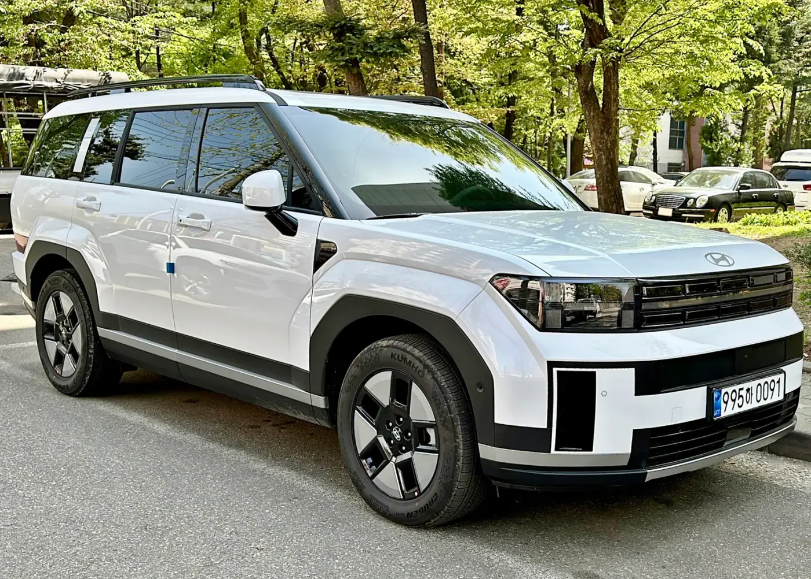
▲ 5세대 현대 싼타페 하이브리드. 해외 판매 사양 ⓒ Benespit, Wikimedia Commons (CC BY-SA 4.0)
"사진보다 실물이 낫다"와 "그래도 뒷모습은 아니다". 5세대 싼타페가 2023년 8월 공개됐을 때 여론은 이렇게 갈렸습니다. 그로부터 2년이 지난 지금, 싼타페는 2026년 8월 국내에서 3,596대가 팔려 국산차 모델별 판매 6위에 올랐습니다(오토트리뷴 집계 기준).
디자인 논쟁은 여전하지만, 차를 직접 몰아본 사람들의 평가는 꽤 한쪽으로 모입니다. 카프리즘은 국내 매체 시승기 5편과 해외 매체(미국·영국·호주) 리뷰 8편, 그리고 공개된 오너 평가를 모아 무엇이 칭찬받고 무엇이 반복해서 지적됐는지 정리했습니다. 카프리즘이 직접 시승한 기사가 아니라, 공개된 국내외 리뷰를 모아 비교한 종합 기사입니다. 가격과 제원은 현대차 공식 가격표·카탈로그로 다시 확인했고, 해외 리뷰에만 해당하는 사양 차이는 따로 표시했습니다.
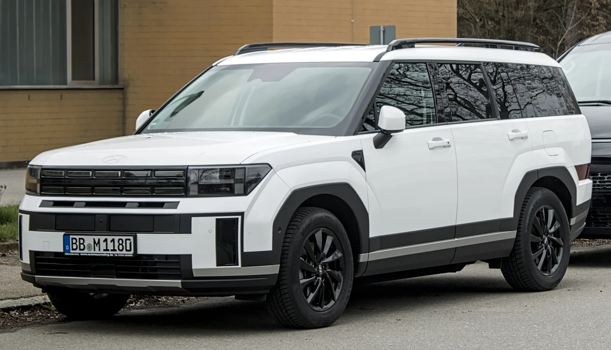
▲ 5세대 싼타페(MX5)는 각진 차체와 긴 후면 오버행으로 실내 공간을 키웠다. 독일에서 촬영된 유럽 판매 사양 ⓒ Alexander Migl, Wikimedia Commons (CC BY-SA 4.0)
1. 시승기 13편, 한 줄씩 요약하면
먼저 어떤 리뷰를 모았는지부터 밝힙니다. 국내 시승기는 2023년 8월 미디어 시승회와 2024년 상반기 개별 시승이 중심이고, 해외 리뷰는 2024~2026년 사이 현지 사양을 몬 결과입니다. 2026년형 국내 싼타페는 트림 구성과 기본 사양이 일부 바뀌었을 뿐 차체와 파워트레인은 그대로여서 초기 시승기의 주행 평가도 지금 차에 대체로 적용됩니다. 다만 미국 2026년형 가솔린처럼 해외에서만 바뀐 부분은 국내 차와 다를 수 있습니다.
| 매체(시점) | 시승 모델 | 좋았던 점 | 아쉬운 점 |
|---|---|---|---|
| 카가이 (2023.8) | 2.5T 2WD 7인승 캘리그래피 | 2·3열 공간, 완전 평탄화 차박, 쏘렌토보다 부드러운 승차감과 정숙성 | 무게 증가로 고속 제동 시 밀림, 터치식 공조 패널 질감 |
| 오토헤럴드 (2023.8) | 2.5T 6인승 풀옵션 | 테일게이트~트렁크로 이어지는 적재 구성, 가솔린 특유의 부드러운 시동·정숙성 | 답답하게 느껴진 디지털 룸미러, 고속 급가속 때 거칠어지는 엔진 반응 |
| 엠투데이 (2023.8) | 2.5T 2WD 캘리그래피 | 정속 주행 실연비(14.3km/L), 생각보다 넉넉한 3열 | 3열은 2열보다 확실히 불편 |
| 모터그래프 (2024.1) | HEV AWD 풀옵션 | 크게 줄어든 하이브리드 엔진음, 고속 안정감, 기본 트림 구성, 연비 | 잔요철에서 툭툭 치는 하체, 0→100km/h 8.8초의 밋밋한 가속, 4세대보다 둔해진 코너 반응 |
| 탑라이더 (2024.5) | 2.5T 2WD 6인승 캘리그래피 | 실내 소재·마감, 2열 전동시트, 동급 가장 여유로운 3열, 시트 포지션 | 2,000rpm 이하를 고집하는 변속 성향, 'H'를 과하게 강조한 디자인 |
| 매체(시장) | 대상 모델 | 좋았던 점 | 아쉬운 점 |
|---|---|---|---|
| Car and Driver (미국) | 2026 하이브리드 · 10점 만점에 9점 | 독특한 외관, 연비, 기본 사양, 편안한 승차감 | 고속도로 합류·추월 때 굼뜬 가속, 경쟁차보다 좁은 3열 레그룸 |
| MotorTrend (미국) | 2026 가솔린·하이브리드 | 양방향 콘솔, 3열 전용 공조, 시트백 USB 등 실내 디테일 | 두 파워트레인 모두 빠르진 않음, 고속 풍절음 |
| Edmunds (미국) | 2024 하이브리드 캘리그래피 AWD, 1년·약 2만 마일 장기 시승 | 고급스러운 실내 소재와 수납, 세 줄 모두 성인이 쓸 수 있는 공간, 1년간 품질 문제 없음 | 인증치에 크게 못 미친 장기 실연비, 터치식 조작부, 손세차만 가능한 무광 도장 |
| Top Gear (영국) | 하이브리드·PHEV | 디자인, 실내 완성도, 실용성, 가격 대비 가치 | 보이는 만큼의 오프로더는 아님, 부하가 걸릴 때 거친 4기통 엔진음 |
| Autocar (영국) | 하이브리드 AWD 계측 로드 테스트(PHEV 포함 평가) | 실용적이고 잘 짜인 실내, 3열까지 넉넉한 헤드룸, 예상보다 좋은 코너링 | 포트홀에서 둔탁한 충격, 부하 시 거친 엔진음, 지나치게 예민한 운전자 보조 경고 |
| Carwow (영국) | 하이브리드·PHEV · 10점 만점에 9점 | 넓은 7인승 실내, 수납, 크기 대비 연비 | 급가속 시 엔진 소음, 운전 재미는 약함 |
| Chasing Cars (호주) | 하이브리드 엘리트 AWD · 10점 만점에 8.0점 | 정숙하고 편안한 장거리 성향, 가변적인 적재 공간 | 20인치 휠의 잔충격, 2.5 터보 대비 부족한 힘 |
| CarExpert (호주) | 2025 하이브리드 2WD | 가격 경쟁력, 정숙한 하이브리드, 도심 승차감 | 호불호 갈리는 박스 디자인, 고속 효율을 위한 변속 단수 부족 |
오너 평가도 함께 봤습니다. 토픽트리가 2025년 10월 10일 네이버 마이카 오너평가 화면을 캡처해 보도한 내용에 따르면, 싼타페 하이브리드는 500명 이상 참여, 평균 9.1점, 거주성 항목 9.7점이었습니다. 카프리즘이 네이버 마이카에서 직접 조회한 수치가 아니라 약 1년 전 보도를 다시 인용한 것이므로, 현재 점수와 참여 인원은 달라졌을 수 있습니다. 오너 평가는 그 차를 고른 사람이 매기는 구조라 점수가 높게 나오는 경향이 있으므로, 절대 점수보다는 항목 간 순서를 보는 편이 유용합니다. 싼타페의 경우 공간(거주성)이 가장 높고, 출력과 가격이 아쉬운 쪽으로 언급됩니다.
2. 칭찬과 지적, 어디까지 합의됐나
13개 매체의 평가를 항목별로 나눠, 같은 방향의 평가가 몇 곳에서 나왔는지 세어 봤습니다. 한 매체가 특정 항목을 언급하지 않은 경우는 세지 않았습니다.
| 항목 | 평가 방향 | 합의도 | 비고 |
|---|---|---|---|
| 2열·적재 공간 | 칭찬 | 매우 높음 | 언급한 거의 모든 매체가 동급 최상위로 평가 |
| 테일게이트·차박 활용 | 칭찬 | 높음 | 국내 매체는 골프백 가로 적재·평탄화를 직접 확인 |
| 실내 아이디어·수납 | 칭찬 | 높음 | 양방향 콘솔, 듀얼 무선충전, UV-C 트레이가 반복 언급 |
| 정숙성 | 대체로 칭찬 | 중간 | 국내는 호평 일색, 해외는 풍절음·노면 소음 지적이 섞임(MotorTrend·CarExpert) |
| 3열 | 엇갈림 | 낮음 | "성인 둘 충분"부터 "아이용"까지 폭이 넓다 |
| 하이브리드 가속 | 지적 | 높음 | 일상 주행은 충분, 합류·추월에서 여유 부족 |
| 엔진음(급가속) | 지적 | 중간 | 해외 매체 다수가 지적, 모터그래프는 "이전보다 크게 줄었다" |
| 승차감 | 대체로 칭찬, 조건부 지적 | 중간 | 큰 굴곡은 잘 거르지만 잔요철·큰 휠에서 툭툭 치는 감각 |
| 디자인 | 엇갈림 | 낮음 | 해외는 호평 우세, 국내는 후면을 중심으로 호불호 |
| 연비 | 대체로 칭찬 | 중간 | 국내 시승·오너는 호평, 미국 장기 시승은 인증치 미달 |
한 줄로 줄이면 "공간과 실내 완성도는 이견이 거의 없고, 하이브리드의 힘과 3열·디자인은 사람마다 판단이 갈린다"입니다. 카가이는 미디어 시승회 직후 "도대체 어디서 단점을 찾을 수 있을까"라고 적었고, 모터그래프는 품질 이슈로 무상수리가 시작된 시점이라 "첫인상이 좋을 리 없었다"고 시작했지만 결론은 쏘렌토보다 싼타페를 추천하는 쪽이었습니다. 출발점이 달랐던 두 매체가 같은 결론에 도착했다는 점이 눈에 띕니다.
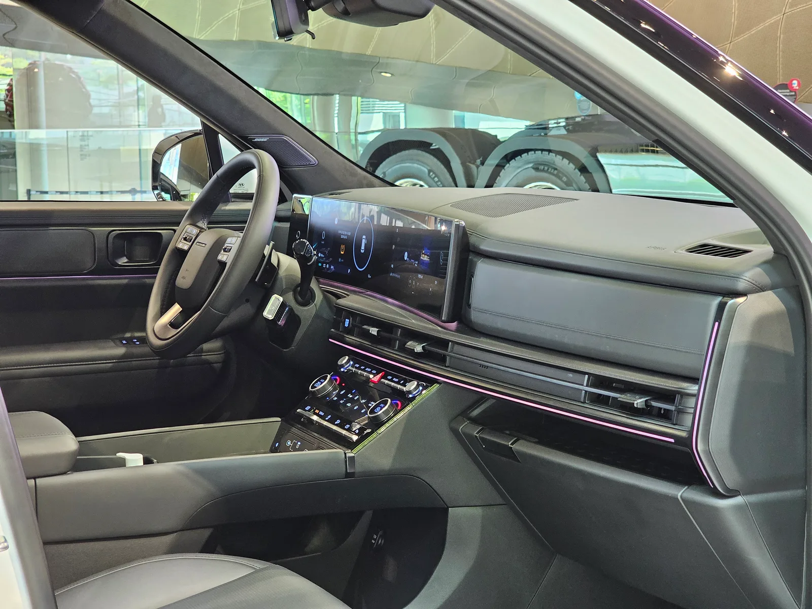
▲ 동승석 앞 대시보드는 위아래 두 단으로 수납공간을 나눴다. 칼럼식 변속 레버 덕분에 센터 콘솔 앞쪽도 비어 있다. 현대모터스튜디오 고양 전시차 ⓒ Damian B Oh, Wikimedia Commons (CC BY-SA 4.0)
3. 박스 디자인 논란, 2년 뒤의 결론
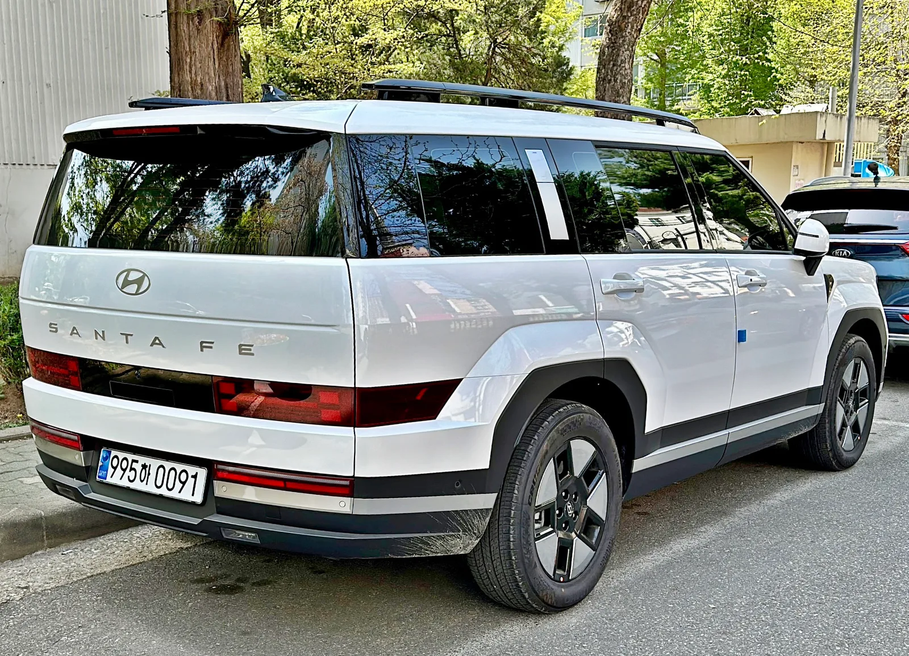
▲ 논쟁의 중심이었던 후면. 테일램프를 범퍼 쪽으로 낮게 내리고 테일게이트를 직사각형으로 키웠다. 해외 판매 사양 ⓒ Benespit, Wikimedia Commons (CC BY-SA 4.0)
디자인에 대한 평가는 시장별로 온도가 확연히 다릅니다. 해외 매체는 호의적인 편입니다. Car and Driver는 장점 첫 줄에 "신선하고 독특한 외관"을 올렸고, Carwow는 외관을 장점으로 꼽았으며, Top Gear도 안팎 모두 매력적인 디자인이라고 평가했습니다. 반대로 호주 CarExpert는 "호불호 갈리는 박스 디자인"을 단점 목록에 넣었습니다.
국내 매체는 대체로 "사진보다 실물이 낫다"는 쪽입니다. 오토헤럴드는 공개 전 위장막 사진과 예상도가 돌 때 혹평이 많았지만 실물을 보면 호평으로 바뀐다고 썼고, 카가이는 논란의 후면이 오히려 깔끔하게 다가온다며 시승 중 테일램프 시인성 문제도 느끼지 못했다고 전했습니다. 반면 탑라이더는 'H'를 지나치게 강조한 디자인이 호불호를 부른다고 봤고, 모터그래프는 무난한 디자인의 쏘렌토가 여전히 인기인 이유로 이 점을 들었습니다.
📍 디자인은 '공간을 위한 선택'이었다
여러 시승기가 공통으로 짚는 대목은 이 디자인이 공간을 위해 선택됐다는 점입니다. 카가이는 쏘렌토처럼 뒷유리를 비스듬하게 눕혔다면 보기에는 나았겠지만 3열과 적재공간에서 손해를 봤을 것이라고 지적했습니다. 현대차는 이 차를 테일게이트 영역부터 설계를 시작했다고 밝혔고, 박스형 차체에도 공기저항계수 0.294를 확보했습니다. 오너 평가에서도 후면 디자인은 호불호 항목으로 남았지만, 거주성 점수(9.7점)가 가장 높았다는 점과 함께 보면 디자인의 대가로 얻은 것이 무엇인지 분명해집니다.
4. 공간 — 2열·3열·트렁크·테일게이트
시승기들이 가장 강하게 합의한 부분이 공간입니다. 먼저 현대차가 발표한 공식 수치를 보고, 그다음 시승기가 확인한 체감을 붙여 봤습니다.
| 항목 | 수치 | 비고 |
|---|---|---|
| 전장 × 전폭 × 전고 | 4,830 × 1,900 × 1,720mm | 루프랙 선택 시 전고 1,770mm, 캘리그래피 1,730(1,780)mm |
| 휠베이스 | 2,815mm | 4세대보다 50mm 늘어남 |
| 2열 레그룸 | 가솔린 1,075mm / 하이브리드 1,055mm | 하이브리드가 20mm 짧다 |
| 3열 레그룸 / 헤드룸 | 761mm / 958mm | 3열 리클라이닝 10도 |
| 3열 숄더룸 | 1,360mm | 2열 1,475mm |
| 트렁크 용량 | 725L (VDA 기준) | 4세대 대비 +91L |
| 테일게이트 개구 폭 | 1,275mm | 4세대 대비 +145mm |
* 출처: 현대자동차 글로벌 뉴스룸(2023년 8월) 발표 제원, 현대자동차 2026 싼타페 카탈로그
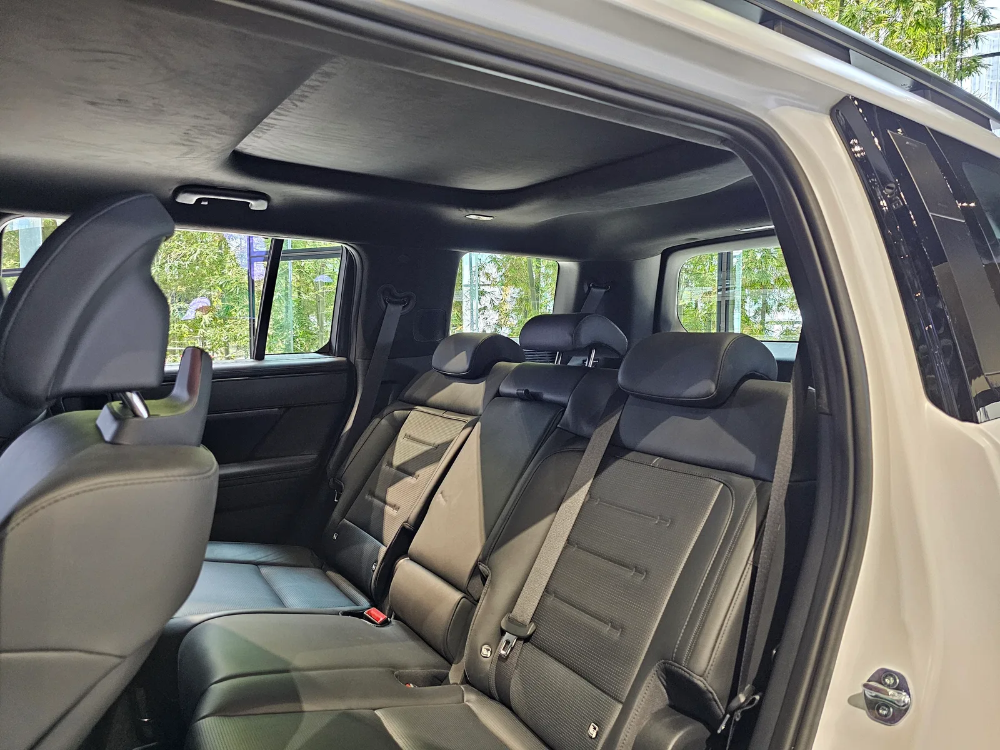
▲ 2열 벤치 시트. 6:4 분할 폴딩과 슬라이딩·리클라이닝이 전 트림 기본이다. 현대모터스튜디오 고양 전시차 ⓒ Damian B Oh, Wikimedia Commons (CC BY-SA 4.0)
2열은 이견이 거의 없습니다. 모터그래프는 뒷문이 열리는 각도가 커서 카시트를 달고도 여유가 있다고 했고, Car and Driver는 성인에게도 넉넉하다고 평가했습니다. Chasing Cars는 B필러의 송풍구와 시트백 안쪽 USB-C 같은 디테일을 칭찬했습니다. 6인승을 고르면 2열이 전동 독립시트로 바뀌는데, 탑라이더는 이 차급에서는 이례적인 호화 사양이라고 평가했습니다.
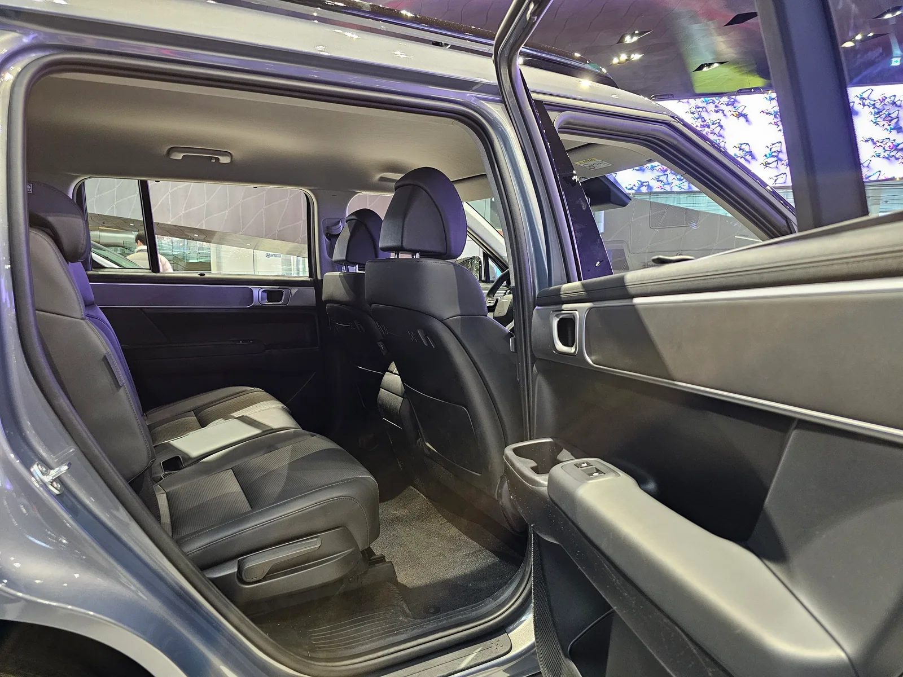
▲ 6인승 사양의 2열 독립시트. 가운데 통로로 3열에 드나들 수 있다. 현대모터스튜디오 고양 전시차 ⓒ Damian B Oh, Wikimedia Commons (CC BY-SA 4.0)
3열은 평가가 가장 크게 엇갈리는 곳입니다. 국내 매체는 후한 편입니다. 카가이는 "성인 두 명이 타기에 충분"하다고 했고, 엠투데이는 2열을 당기지 않아도 20대 평균 체형 남성이 1~2시간 탈 만하다고 전했습니다. 탑라이더는 SUV 3열의 활용도 자체는 크지 않지만 동급에서는 가장 여유롭다고 정리했습니다. 해외에서는 Top Gear와 Chasing Cars가 성인 7명이 탈 수 있다고 봤고, Edmunds도 세 줄 모두 성인이 쓸 수 있다고 평가했으며, Autocar는 3열 헤드룸에 여유가 있다고 짚었습니다. 반면 Car and Driver는 더 큰 3열 SUV보다 레그룸이 빠듯하다고 했고, Carwow와 CarExpert는 성인은 짧은 거리 정도, 아이에게는 충분한 자리로 봤습니다. 비교 대상이 국내에서는 쏘렌토, 미국에서는 더 큰 3열 SUV라는 점이 평가 차이를 만든 것으로 보입니다. Chasing Cars는 성인 7명에 짐까지 실으면 총중량 한도에 금방 닿는다는 점도 짚었습니다.
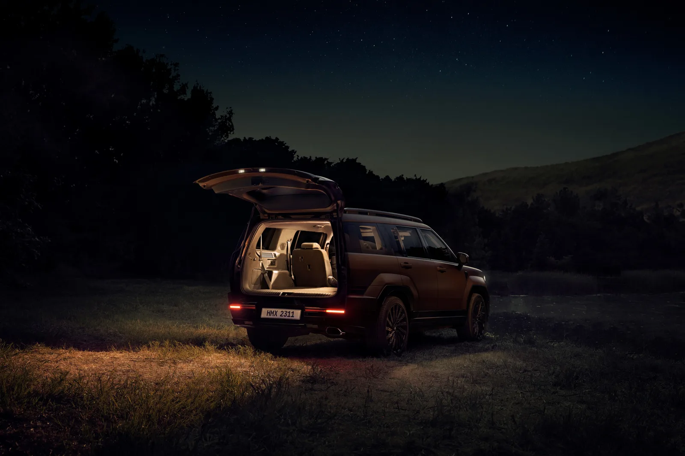
▲ 테일게이트를 연 채 2·3열을 접으면 평평한 적재 공간이 만들어진다. 현대차 공개 당시 보도사진 사진=현대자동차
트렁크와 테일게이트는 국내 매체가 직접 몸으로 확인한 대목이 많습니다. 카가이와 모터그래프는 골프백이 대각선이 아니라 가로로 바로 들어간다고 확인했고, 모터그래프는 3열을 세운 상태에서도 골프백 2개를 무리 없이 실었다고 전했습니다. 오토헤럴드는 테일게이트 아래쪽 개구부 폭이 1,196mm, 실내 높이가 887mm에 이른다며 이 구성은 팰리세이드는 물론 프리미엄 브랜드 동급 이상이라고 평가했습니다.
차박 평탄화에 대해서는 결이 조금 다릅니다. 카가이는 키 178cm 기자가 누워도 머리 공간을 따로 만들 필요가 없었고 앉았을 때도 헤드룸 여유가 있다고 했지만, 모터그래프는 광고처럼 성인이 앉아 활동할 정도는 아니었다며 키가 큰 탓에 앉으면 천장에 머리가 닿았다고 전했습니다. 두 매체 모두 "누워서 자기에는 충분하다"는 데는 동의합니다. 모터그래프는 팰리세이드와 직접 실측 비교한 뒤 "팰리세이드가 한 체급 더 넓은 것은 분명하지만 싼타페도 충분히 넓다"고 결론 냈습니다.
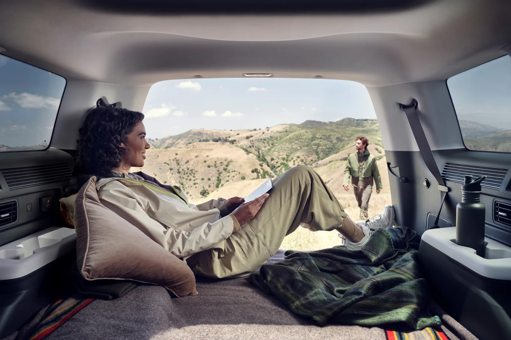
▲ 현대차가 '테라스' 콘셉트로 소개한 적재 공간 활용 장면 사진=현대자동차
✅ 트렁크 수치, 시장마다 다른 이유
· 국내 발표 수치는 725L(VDA), 호주 CarExpert가 인용한 현지 수치는 5인 탑승 기준 628L, 2·3열을 모두 접으면 1,949L다
· 측정 기준과 좌석 구성, 시장별 사양이 달라 숫자를 그대로 비교하기는 어렵다
· 호주 Chasing Cars에 따르면 하이브리드는 가솔린보다 적재 용량이 14L 작다
· 국내 공식 가격표에도 "하이브리드 전 사양은 러기지 보드 하단 수납 불가"라는 안내가 있다. 트렁크 바닥 아래 공간을 자주 쓴다면 확인할 부분이다
5. 2.5 터보 vs 1.6 터보 하이브리드
| 항목 | 가솔린 2.5 터보 | 1.6 터보 하이브리드 |
|---|---|---|
| 엔진 최고출력 | 281PS/5,800rpm | 180PS/5,500rpm |
| 엔진 최대토크 | 43.0kgf·m/1,700~4,000rpm | 27.0kgf·m/1,500rpm |
| 구동 모터 | - | 47.7kW / 264Nm |
| 시스템 최고출력 | - | 235PS |
| 시스템 최대토크 | - | 국내 카탈로그 미표기 (호주 사양 367Nm) |
| 변속기 | 습식 8단 DCT | 자동 6단 |
| 복합연비(2WD 18인치) | 11.0km/L (5·6인승) / 10.6km/L (7인승) | 15.5km/L |
| 복합연비(AWD 18인치) | 10.1km/L | 14.0km/L (5인승) / 13.6km/L (6·7인승) |
| 가장 낮은 복합연비 | 9.4km/L (AWD 20·21인치 7인승 등) | 13.0km/L (AWD 20인치) |
* 현대차 2026 싼타페 카탈로그(2026년 8월 31일 게시본)는 하이브리드의 엔진 토크(27.0kgf·m)와 모터 토크(264Nm)만 따로 적고 시스템 합산 토크는 표기하지 않는다. 367Nm는 호주 Chasing Cars가 전한 현지 사양 수치다.
2.5 터보는 "힘은 충분하다"는 데 이견이 없습니다. 탑라이더는 이 차급에서는 오버스펙에 가깝고 풀가속 펀치력은 팰리세이드 3.8 가솔린을 앞선다고 평가했습니다. 카가이는 시속 120km까지 가속해도 엔진음과 풍절음이 거슬리지 않는다고 했습니다. 다만 탑라이더는 일상 주행에서 2,000rpm 아래를 유지하려는 성향이 강해 경쾌함은 떨어진다고 지적했고, 오토헤럴드는 고속에서 깊게 밟을 때 엔진 반응이 신경질적으로 변한다고 적었습니다.
하이브리드에 대한 평가는 "일상에는 충분, 여유는 부족"으로 모입니다. 모터그래프는 AWD 모델로 0→100km/h 8.8초를 측정해 4세대 하이브리드(8초 초반)보다 다소 느리다고 전하면서, 대신 조용함과 공간에 집중한 결과로 해석했습니다. 현대·기아 1.6 터보 하이브리드 특유의 거친 엔진음이 신형에서는 크게 줄었다는 평가도 남겼습니다. Car and Driver는 가속이 "그저 충분한 수준"이며 고속도로 합류·추월에서 굼뜰 때가 있다고 썼고, Chasing Cars는 하이브리드가 "두 배 가까이 알뜰하지만, 힘은 그만큼 넉넉하지 않다"고 요약했습니다. 영국 Top Gear·Autocar·Carwow는 급가속 때 올라오는 4기통 엔진음을 지적했습니다. 토픽트리가 전한 국내 오너 평가에서도 2톤에 가까운 차체로 고속 추월할 때 한 박자 늦다는 지적이 많았습니다.
📍 해외 리뷰를 읽을 때 주의할 사양 차이
· 미국 2026년형 가솔린은 8단 DCT 대신 토크컨버터 방식 8단 자동변속기로 바뀌었다(MotorTrend). 국내 2026 싼타페 가솔린은 공식 가격표상 습식 8단 DCT를 유지한다. 미국 리뷰의 가솔린 변속 감각 평가는 국내 차와 다를 수 있다.
· 영국 2026년형 하이브리드는 시스템 출력이 212bhp에서 236bhp로 올라갔다고 Autocar가 전했다. 국내 카탈로그 기준 시스템 출력은 235PS다.
· 플러그인 하이브리드(PHEV)는 유럽 등에서 판매되지만 국내에는 없다. Top Gear·Autocar·Carwow의 PHEV 평가는 참고만 하는 것이 좋다.
· 미국 리뷰의 출력 표기(가솔린 277hp, 하이브리드 231~232hp)는 측정 단위와 기준이 달라 국내 PS 수치와 다르게 보인다.
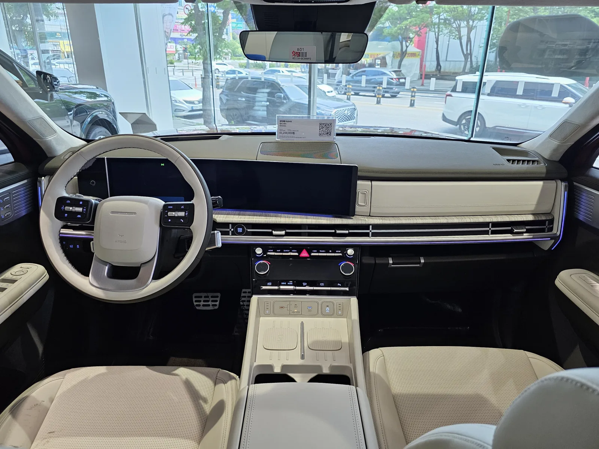
▲ 하이브리드 캘리그래피의 라이트 베이지 투톤 실내. 12.3인치 클러스터와 내비게이션을 한 화면으로 이은 파노라믹 커브드 디스플레이가 전 트림 기본이다 ⓒ Damian B Oh, Wikimedia Commons (CC BY-SA 4.0)
결국 선택 기준은 주행거리입니다. 탑라이더는 매일 차를 쓴다면 하이브리드, 주말 여행용이라면 가솔린을 권했습니다. 모터그래프는 당시 가격 차이(342만원)를 놓고 연간 2만km 주행 기준 세금 36만원, 유류비 84만원 등 연간 약 119만원의 유지비 차이가 난다고 계산해 3년이면 초기 비용 차이를 넘어선다고 봤습니다. 현재 공식 가격표 기준으로 익스클루시브 2WD끼리의 차이는 세제혜택 후 365만원(가솔린 3,657만원, 하이브리드 4,022만원)으로, 이 계산의 결론은 크게 달라지지 않습니다. 다만 유가와 세제가 바뀌면 손익분기 시점도 달라집니다.
6. 하이브리드 실연비 — 인증치, 시승기, 오너
연비는 시장과 측정 방식에 따라 결과가 가장 크게 흔들린 항목입니다. 인증 방식이 다른 해외 수치는 국내 공인연비와 직접 비교하지 말고, 각 시장 안에서 인증치 대비 몇 % 나왔는지로 읽어야 합니다.
| 출처 | 조건 | 인증치 | 측정·체감 |
|---|---|---|---|
| 국내 공인연비 | 2WD 18인치 ~ AWD 20인치 | 15.5 ~ 13.0 | - |
| 모터그래프 | AWD, 정체 심한 도심 / 혼합 주행 | 13.6 (AWD 18인치 6·7인승) | 약 10 / 15 이상 가능 |
| 네이버 마이카 오너 (토픽트리 2025년 10월 보도) | 도심 / 고속도로 정속 | 최대 15.5 | 14~16 / 약 15 |
| Edmunds 장기 시승 (미국) | 2024 AWD 캘리그래피, 약 2만 마일(약 3만2천km) 누적 | 34mpg (약 14.5) | 27.3mpg (약 11.6) |
| Top Gear (영국) | 하이브리드 | 40.9mpg (약 14.5) | 실사용 예상 37mpg (약 13.1) |
| Autocar (영국) | 하이브리드 AWD, 로드 테스트 기간 평균 | - | 37.6mpg (약 13.3) |
| CarExpert (호주) | 2025 2WD, 일주일 혼합 주행 | 5.4L/100km (약 18.5) | 6.2L/100km (약 16.1) |
* 미국 mpg는 미국 갤런, 영국 mpg는 영국 갤런 기준으로 환산했다. 호주 인증치는 측정 방식이 달라 국내 공인연비보다 높게 표시된다.
흐름은 이렇습니다. 국내 오너와 국내 시승기는 도심 연비에 만족하는 반면, 미국 Edmunds의 1년 장기 시승은 인증치보다 약 20% 낮은 결과를 냈습니다. Edmunds는 크고 각진 AWD 3열 SUV로는 나쁘지 않은 수치이고 앞서 시험한 가솔린 싼타페보다는 확실히 낫다고 덧붙이면서도, 하이브리드 추가 비용을 회수하려면 오래 타야 한다고 봤습니다. 로그북에는 시속 75마일(약 120km/h) 정속 장거리 구간에서 23mpg에 그친 기록도 있어, 고속 순항 비중이 큰 미국 주행 환경의 영향이 커 보입니다. 정체가 잦은 국내 도심에서 하이브리드의 이점이 가장 크게 드러난다는 점은 모터그래프와 오너 평가가 공통으로 보여줍니다.
가솔린 2.5 터보는 카가이가 자동차 전용도로 정속 13~14km/L, 시내 7~8km/L를, 엠투데이가 약 45km 정속 구간에서 14.3km/L를 기록했습니다. 고속 정속에서는 가솔린도 기대 이상이지만, 도심에서는 하이브리드와 격차가 크게 벌어집니다.
7. 승차감과 정숙성 — "부드럽다"와 "툭툭 친다" 사이
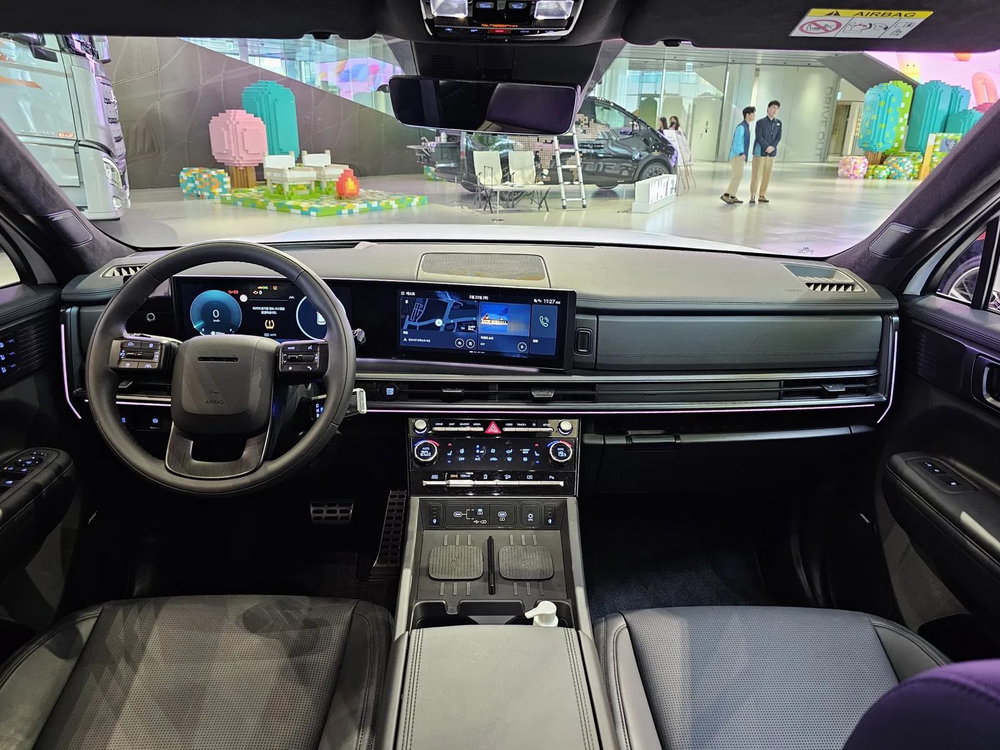
▲ 블랙잉크 트림의 블랙 원톤 실내. 1·2열 도어에 이중접합 차음유리가 기본 적용된다 ⓒ Damian B Oh, Wikimedia Commons (CC BY-SA 4.0)
승차감은 표현이 제각각이지만 내용을 뜯어 보면 같은 이야기를 하고 있습니다. 큰 굴곡과 고속 안정감은 좋고, 짧고 날카로운 잔요철에서 툭 치는 감각이 있다는 것입니다.
- 카가이: 21인치 휠에도 방지턱 충격을 잘 걸러낸다. 쏘렌토보다 부드럽고 토요타 하이랜더보다는 단단하며, 고속 직진 안정성이 놀라운 수준
- 모터그래프: 큰 움직임은 여유 있게 처리하지만 자잘한 충격에서 "툭툭 치는" 감각이 의외로 강하다. 최근 현대차그룹 신차에 공통으로 쓰인 SDC 댐퍼의 고주파 대응이 과제라고 분석
- 탑라이더: 이중 밸브 댐퍼와 하이드로 부시로 중저속 요철은 부드럽지만 쏘렌토보다는 단단하게 느껴질 수 있다
- Autocar: 부드러운 서스펜션에도 포트홀에서 휠이 둔탁하게 떨어진다. 작은 휠의 하이브리드는 덜하지만 큰 휠의 PHEV는 잔진동이 신경 쓰인다
- Chasing Cars: 20인치 휠에서는 작은 노면 요철에 다소 딱딱하다. 가족과 짐을 싣고 달리면 오히려 자세가 안정된다
- Car and Driver·CarExpert: 승차감이 편안하고 도심에서 유연하다
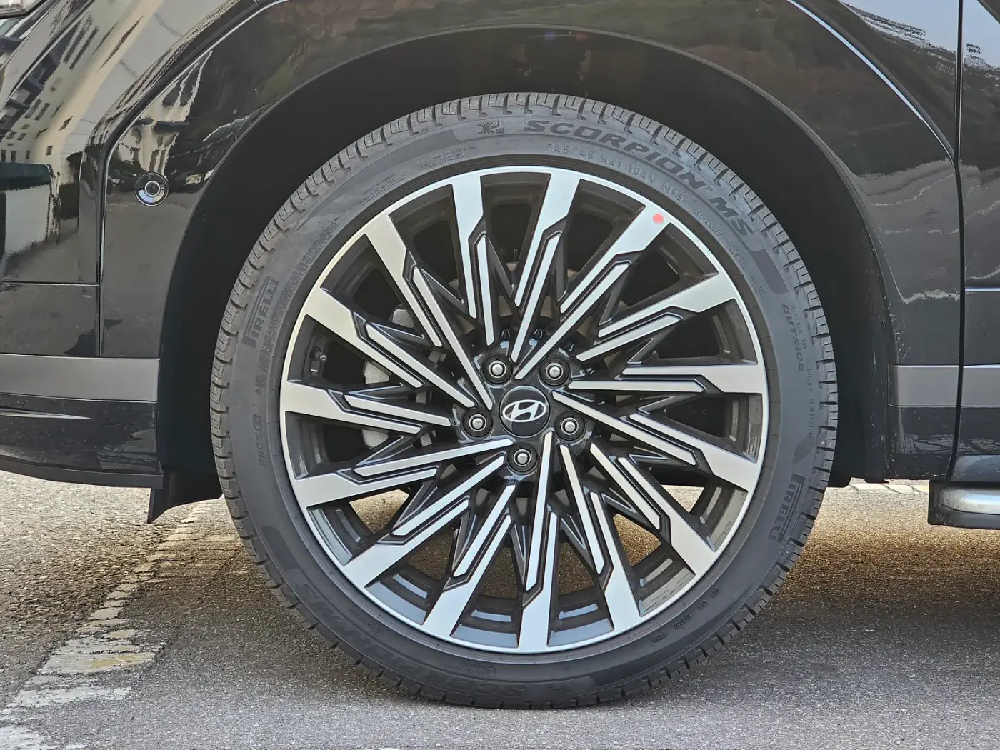
▲ 캘리그래피 트림의 21인치 휠. 타이어 옆면 높이가 낮은 245/45 R21 규격이다 ⓒ Damian B Oh, Wikimedia Commons (CC BY-SA 4.0)
여러 매체가 휠 크기를 변수로 지목했다는 점이 핵심입니다. 국내 싼타페는 트림에 따라 18·20·21인치 휠이 들어가는데, 연비뿐 아니라 승차감 면에서도 18인치가 가장 무난한 선택이라는 결론이 나옵니다.
정숙성은 국내 매체의 평가가 특히 좋습니다. 카가이는 각진 차체임에도 풍절음이 적었다고 했고, 탑라이더는 1·2열 이중접합 차음유리의 효과가 크다고 평가했습니다. 반면 미국 MotorTrend는 고속에서 들리는 바람 소리를, 호주 CarExpert는 거친 노면에서 들어오는 소음과 간헐적인 풍절음을 지적했습니다. Autocar 계측에서는 시속 70마일(약 113km/h) 순항 때 실내 소음이 69dBA로 닛산 엑스트레일과 같은 수준이었고, 소음의 크기보다 급가속 때 엔진음의 질감이 거슬린다고 평가했습니다. 국내 시승은 짧은 코스 위주였다는 점도 감안할 필요가 있습니다.
8. 2026년 9월 기준 가격표와 트림 추천
2026년 9월 27일 현재 현대차 홈페이지에서 판매 중인 모델은 2025년 8월 7일 연식변경으로 나온 2026 싼타페이며, 2027년형 가격표는 아직 게시되지 않았습니다. 아래 가격은 현대차 홈페이지에 게시된 2026 싼타페 공식 가격표(2026년 8월 31일 갱신본)의 5인승 기준입니다. 2025년 8월 출시 당시 보도자료 가격(개별소비세 3.5% 적용)보다 가솔린 익스클루시브 기준 51만원 높습니다. 7인승은 69만원, 6인승은 104만원이 추가되고, 가솔린 AWD(HTRAC)는 223만원이 더해집니다.
| 트림 | 가솔린 2.5T 2WD | 하이브리드 2WD (세제혜택 전 / 후) | 하이브리드 AWD |
|---|---|---|---|
| 익스클루시브 | 3,657 | 4,122 / 4,022 | 4,345 |
| 프레스티지 | 3,944 | 4,409 / 4,309 | 4,632 |
| H-Pick | 4,209 | 4,673 / 4,573 | 4,896 |
| 블랙 익스테리어 | 4,244 | 4,708 / 4,608 | 4,931 |
| 캘리그래피 · 블랙잉크 | 4,547 | 4,977 / 4,877 | 5,200 |
* 출처: 현대자동차 2026 싼타페·2026 싼타페 하이브리드 공식 가격표. 하이브리드 AWD 가격표에는 세제혜택 후 가격이 따로 표기돼 있지 않다. 옵션·프로모션에 따라 실구매가는 달라진다.
하이브리드 AWD는 가격표에 세제혜택 후 가격이 없습니다. 모터그래프는 4륜을 고르면 세금과 각종 하이브리드 혜택을 받지 못한다고 지적했고, 같은 체급 쏘렌토 가격표에도 "전자식 4WD 선택 시 친환경차 세제혜택 미대상"이라고 명시돼 있습니다. 그래서 하이브리드에서 2WD와 AWD의 실제 가격 차이는 323만원(익스클루시브 세제혜택 후 4,022만원 vs 4,345만원)으로 벌어집니다. 탑라이더는 겨울철 국도 주행이 많지 않다면 사륜구동은 선택하지 않아도 되고 2WD만으로도 충분히 안정적이라고 평가했습니다.
| 이런 경우 | 추천 조합 | 근거 |
|---|---|---|
| 가성비 우선, 매일 출퇴근 | 하이브리드 2WD 익스클루시브 + 필요 시 7인승(69만원) + 빌트인 캠 2·증강현실 내비(45만원) | 모터그래프 추천 트림. 전동 테일게이트·220V 인버터·파노라믹 커브드 디스플레이가 기본이고, Chasing Cars·Edmunds도 하위 트림의 가치를 높게 봤다 |
| 주차·장거리 편의까지 | 하이브리드 2WD H-Pick (세제혜택 후 4,573만원) | 서라운드 뷰·원격 주차·HUD·에르고 모션 시트·릴렉션 시트가 기본. 18인치 휠이라 승차감·연비 손해가 적다 |
| 2열 VIP 좌석이 필요 | 원하는 트림 + 6인승(104만원) | 2열 전동 독립시트와 원터치 워크인. 탑라이더가 동급에서 이례적인 사양으로 평가 |
| 주행거리가 적고 힘이 중요 | 가솔린 2.5T 2WD 프레스티지 (3,944만원) | 하이브리드보다 465만원 저렴(세제혜택 전 기준). 2.5T 펀치력은 모든 시승기가 인정 |
| 눈길·비포장 잦은 지역 | 가솔린 2.5T + HTRAC(223만원) | 하이브리드 AWD는 세제혜택이 사라지고 연비도 떨어진다. 사륜이 꼭 필요하면 가솔린 쪽 손해가 작다 |
캘리그래피 트림은 21인치 휠과 나파가죽 시트, 디지털 센터 미러가 더해지는데, 시승기에서는 평가가 갈리는 요소가 모여 있습니다. 21인치 휠은 잔충격 지적의 원인이 됐고, 디지털 센터 미러는 카가이가 해상도를, 오토헤럴드가 답답한 시야를 아쉬워했습니다. 소재와 외관에 가치를 두는 것이 아니라면 H-Pick이 실속 있는 상단 트림입니다.
9. 경쟁차 대비 위치 — 쏘렌토·팰리세이드·그랑 콜레오스·필랑트
| 모델 | 시작 가격 | 좌석 | 복합연비(최고) | 시승기상 성격 |
|---|---|---|---|---|
| 현대 싼타페 HEV | 4,122 (세제혜택 후 4,022) | 5·6·7인승 | 15.5km/L | 공간·실내 아이디어 최상위, 디자인 호불호 |
| 기아 쏘렌토 HEV | 4,063 (세제혜택 후 3,963) | 5·6·7인승 | 15.7km/L | 무난한 디자인, 같은 계열 1.6 터보 하이브리드 |
| 현대 팰리세이드 HEV (2027년형) | 5,077 (9인승 익스클루시브) | 7·9인승 | 14.1km/L | 한 체급 위 공간, 1,000만원가량 높은 가격 |
| 르노 그랑 콜레오스 HEV (27MY) | 4,006 (세제혜택 후 3,906) | 5인승 | 15.7km/L | 2열 SUV, 245ps 하이브리드 |
| 르노 필랑트 HEV | 4,495 (세제혜택 후 4,395) | 2열 구성 | 15.1km/L | 세단형 승차감, 긴 보증 |
* 출처: 기아 쏘렌토 가격표(2026년 9월 갱신), 현대 2027 팰리세이드 하이브리드 가격표, 르노코리아 그랑 콜레오스·필랑트 가격 안내(2026년 9월 기준). 쏘렌토·그랑 콜레오스·팰리세이드는 가장 좋은 연비 사양 기준(팰리세이드는 2.5 터보 하이브리드 2WD 18인치).
쏘렌토와의 비교는 국내 시승기 대부분이 다뤘습니다. 카가이는 디자인 호불호를 빼면 실내·적재공간, 정숙성, 승차감 모두 쏘렌토에 뒤질 게 없다고 했고, 모터그래프와 탑라이더도 쏘렌토 대신 싼타페를 추천했습니다. 과거에는 "주행은 싼타페, 공간과 승차감은 쏘렌토"였던 구도가 5세대에서 뒤집혔다는 것이 공통 진단입니다. 다만 시작 가격은 쏘렌토가 59만원 낮고(하이브리드 2WD 세제혜택 전 기준) 공인연비도 근소하게 앞섭니다. 두 차는 같은 1.6 터보 하이브리드 계열에 47.7kW 모터를 쓰므로, 결국 선택은 디자인과 3열·트렁크를 얼마나 쓰느냐에 달려 있습니다. 두 하이브리드의 사양 차이는 쏘렌토 하이브리드 vs 싼타페 하이브리드 비교 기사에서, 네 차종의 크기 변화는 투싼·스포티지·쏘렌토·싼타페 비교 기사에서 따로 정리했습니다.
팰리세이드는 모터그래프 실측처럼 한 체급 넓지만, 하이브리드 시작 가격이 5,077만원(9인승)으로 싼타페보다 약 1,000만원 높고, 공인 복합연비도 최고 14.1km/L로 싼타페 하이브리드(15.5km/L)보다 낮습니다. 3열을 매일 성인이 쓴다면 팰리세이드, 3열이 가끔이라면 싼타페라는 구분이 합리적입니다.
르노 그랑 콜레오스와 필랑트는 3열이 없는 2열 SUV라 싼타페와 성격이 다릅니다. 대신 승차감과 연비, 긴 보증을 앞세웁니다. 본지가 앞서 다룬 필랑트 오너평가 기사에서는 싼타페에서 넘어온 오너가 장거리 승차감과 운전 피로도 차이를 이유로 들었습니다. 3열이 필요 없고 잔충격에 민감한 가족이라면 비교해 볼 만한 대안입니다. 다만 필랑트 오너평가(9.62점)와 싼타페 하이브리드 오너평가(9.1점)는 조사 플랫폼과 표본이 달라 점수를 그대로 비교할 수는 없습니다.
10. 안전 평가 — KNCAP 1등급, IIHS TSP+
시승기에서는 거의 다루지 않았지만 가족용 SUV를 고를 때 빼놓기 어려운 항목이 충돌 안전성입니다. 공식 평가 결과는 다음과 같습니다.
| 평가 | 대상 | 결과 |
|---|---|---|
| KNCAP 2024 (국토교통부·한국교통안전공단) | 싼타페 하이브리드 | 종합 1등급, 86.6점. 충돌·외부통행자·사고예방 3개 분야 모두 최고 수준을 받은 4개 차종 중 하나 |
| IIHS 2026 (미국 고속도로안전보험협회) | 2026년형 싼타페(미국 사양) | 톱 세이프티 픽+(TSP+). 스몰 오버랩·개정 무빙 오버랩·개정 측면 충돌 모두 Good, 헤드램프 Acceptable |
* 출처: 국토교통부 2024년 자동차안전도평가 결과(2024년 12월 발표, 점수는 경향신문 보도 인용), IIHS 2026 Hyundai Santa Fe 평가 페이지(2026년 9월 27일 조회). IIHS의 개정 무빙 오버랩 Good 등급은 뒷좌석 안전벨트를 보강한 2024년 11월 이후 생산분(2025~2026년형)에 적용된다.
11. 이런 사람에게 맞고, 이런 사람에게는 안 맞는다
✅ 싼타페가 잘 맞는 경우
· 아이가 있어 카시트와 유모차를 자주 싣는 4~5인 가족: 2열 공간과 뒷문 개방각, 직사각형 테일게이트의 장점이 그대로 살아난다
· 캠핑·차박·골프를 즐기는 사람: 평탄화, 골프백 가로 적재, 3열을 세운 상태의 적재 여유가 시승기에서 반복 확인됐다
· 3열을 가끔 쓰는 집: 명절이나 주말에 아이·청소년을 태우는 정도라면 동급에서 가장 여유로운 3열이다
· 도심 주행이 많은 사람: 하이브리드 2WD의 도심 연비가 오너 평가에서 가장 만족도가 높았다
⚠️ 다시 생각해 볼 경우
· 3열에 성인이 매일 타는 경우: 팰리세이드나 미니밴이 낫다(탑라이더도 더 넓은 공간이 필요하면 미니밴을 권했다)
· 고속도로 장거리 추월이 잦고 가속감이 중요한 경우: 하이브리드보다 2.5 터보가 맞고, 하이브리드라면 시승 때 고속 재가속을 꼭 확인할 것
· 잔충격에 민감한 경우: 20·21인치 휠 트림은 피하고 18인치를 고를 것
· 외관, 특히 후면이 마음에 걸리는 경우: 2년이 지나도 가장 크게 갈리는 항목이다. 매일 보는 차라면 실물을 여러 번 보고 결정할 것
· 사륜구동 하이브리드를 원하는 경우: 세제혜택이 사라져 2WD보다 323만원 비싸지고 연비도 떨어진다
12. 정리
국내외 시승기 13편과 오너 평가를 모아 보면, 5세대 싼타페에 대한 결론은 의외로 선명합니다. 공간과 실내 완성도는 이 차급에서 가장 앞서 있고, 박스형 디자인은 그 공간을 위한 대가라는 것입니다. Top Gear는 이 차를 "잘 고민된, 완성도 높은 패밀리 SUV"라고 평가했고, 국내 매체들은 쏘렌토와의 역할이 뒤바뀌었다고 입을 모았습니다.
반대로 하이브리드의 힘, 큰 휠의 잔충격, 성인에게 빠듯한 3열은 여러 매체에서 반복해서 나온 약점입니다. 시승기들의 평가를 그대로 옮기면 가장 무난한 답은 하이브리드 2WD, 18인치 휠, 필요에 맞춘 6·7인승입니다. 여기에 디자인이 마음에 든다면 고민할 이유가 많지 않고, 디자인이 끝내 걸린다면 같은 파워트레인을 쓰는 쏘렌토가 가장 가까운 대안입니다.
※ 이 기사는 공개된 국내외 매체 시승기·리뷰와 오너 평가를 취합해 재구성한 것으로, 카프리즘이 직접 시승한 결과가 아닙니다. 해외 리뷰는 현지 판매 사양 기준이며, 인용한 연비는 각 매체의 주행 조건에서 나온 값입니다. 가격은 2026년 9월 27일 확인한 제조사 공식 가격표 기준입니다.